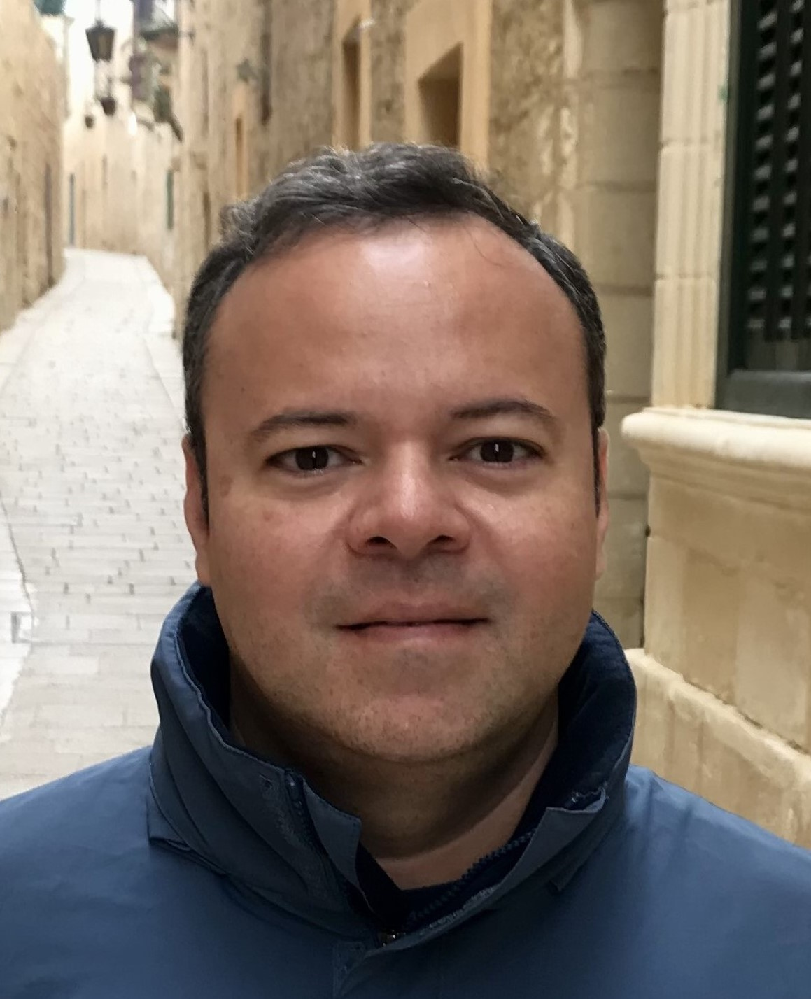
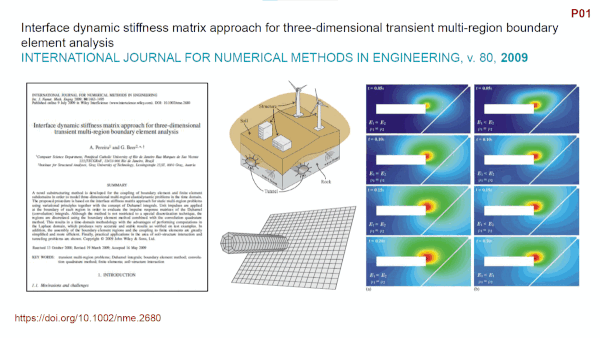

|  |
Andre Maues Brabo Pereira Associate Professor, IC/UFF Ph.D., IfB/TUGraz, 2008 M.S., POLI/PEF/USP, 2004 B.S., FEC/UFPA, 2002 https://lcc-uff.github.io/andre andre@ic.uff.br |
|
Short bio
Andre Pereira is an Associate Professor at the Computer Science Institute of Universidade Federal Fluminense (UFF), Brazil. He holds a Dr. techn. (2008) degree in Engineering and Technical Sciences from Institut fur Baustatic (IfB) at Technische Universitat Graz (TUGraz). He worked as a full time research assistant at the same institution. In July 2008, he moved to Rio de Janeiro and took a position as research colaborator at PUC-Rio. In May 2010, he took the position of permanent Professor at UFF. Since then, he has been working on industry funded projects and has published around 35 journal papers. His research area is Computational Science and Engineering, and his current research interests include numerical computing, computational mechanics, digital petrophysics and computational modeling in material science.
Here you can find my publications, courses, and some other material related to my academic career. My detailed CV is available in Portuguese at Lattes Platform. You can also find more at ORCID and Google Scholar.
[ Courses | Publications | Products | Projects | Collaborators | Contact ]
Courses
I teach courses for graduate and undergraduate students on computing. I am currently teaching:
- Tratamento de Incertezas (2023-2)
- Programação Científica (2023-2)
Publications
Quick visual overview of my main publications:
For more details:
Most of my publication are available on-line, but feel free to contact me if you want some of my papers that you could not find on-line.
Products
In my view, a product is the core asset (development outcomes) of our research achievements. Here, I share the main products under development by our group:
Software:
- PyTomoViewer: A simple tomography viewer.
- CHPack: A fast Julia set of in-core FE solvers to estimate effective material parameters from raw images.
- HETool: A Half-Edge Topological data structure in an object-oriented library.
- Computing effective permeability from 2d images of porous media with FEM.
Trainnings and cases of success:
- Treinamento Micro-CT [in Portuguese].
- Processamento de imagens [in Portuguese].
- Colaboração com Pesquisador da NASA [in Portuguese].
Projects
I have participated as coordinator (C) or member (M) of the following projects:
- 2019-2024: (M) SHELL/ANP, Desenvolvimento de modelos matemáticos, estatísticos e computacionais para o aperfeiçoamento da caracterização petrofísica de reservatórios por Ressonância Magnética Nuclear (RMN)
- 2019-2024: (C) FAPERJ E14/2019, Apoio a Grupos Emergentes - Laboratório Digital de Materiais: Modelagem de Materiais Considerando a Microescala
- 2020-2021: (C) PMN, NitCIM (Niterói smart City Information Modeling) Uma análise de viabilidade da implementação de CIM/BIM pela Prefeitura Municipal de Niterói
- 2016-2020: (C) CNPq Edital Universal, Comportamento Estrutural de Materiais Considerando a Microescala
- 2015-2017: (M) FAPDF, Caracterização numérica da microestrutura de materiais a partir de dados obtidos experimentalmente
- 2013-2017: (M) BG Brasil/ANP, Aplicação de técnicas avançadas de Ressonância Magnética Nuclear (RMN) assistidas por ferramentas computacionais na avaliação petrofísica de rochas carbonáticas
- 2013-2015: (M) FAPERJ Edital 09/2013 Apoio às Engenharias, Previsão de vida útil de estruturas via análise experimental e numérica
- 2011-2012: (C) FAPERJ Edital Auxílio Instalação, Avanços nas Análises Numéricas de Problemas Geotécnicos e Geomecânicos
- 2010-2014: (M) União Europeia, Numerical simulation in technical sciences
- 2010-2011: (C) CENPES/UFF, Modelagem e Visualização em Geomecânica de Reservatórios e Poços (MVGEO)
- 2008-2010: (M) CENPES/PUC-Rio, Modelagem e Visualização em Geomecânica de Reservatórios e Poços (MVGEO)
- 2005-2008: (M) União Europeia, TunConstruct.
- 2005-2008: (M) FWF, Analysis of dynamic soil-structure-interaction in the time domain by a novel coupled multi-region BEM-FEM approach
- 2003-2007: (M) União Europeia, ELBENet: Europe Latin-America Boundary Element NETwork / Alfa Program
- 2002-2004: (M) FAPESP, Desenvolvimento de um sistema computacional para pesquisas com o método dos elementos de contorno
- 2002-2004: (M) FAPESP Edital Bolsa MSc, Um Novo Algoritmo Gráfico para Visualização e Subdivisão do Domínio em Análises Realizadas pelo Método dos Elementos de Contorno
- 2001-2002: (M) UFPA Edital PARD, Análise de Vibrações em Estruturas
Collaborators
Supervision of doctoral theses, master dissertations, bachelor and research beginner projects:
Local collaborators:
- Ricardo Leiderman, UFF/IC
- Pedro Cortez Fetter Lopes, UFF/IC
- Rodrigo Bagueira de Vasconcellos Azeredo, UFF/IQ
- Arno Fritz das Neves Brande, UFF/IB
Regional collaborators:
- Luiz Fernando Martha, PUC-Rio/Tecgraf
- Francisco Thiago Sacramento Aragão, UFRJ/COOPE
- Wendell Diniz Varela, UFRJ/FAU
- Hector Guillermo Kotik, UFRJ/COOPE
- Cláudio Teodoro dos Santos, INT/MCTI
National collaborators:
- Luis Bitencourt, POLI/USP
- Valdirene Maria Silva Capuzzo, UnB/FT/ENC
- Antonio Carlos de Oliveira Miranda, UnB/FT/ENC
International collaborators:
- Klaus Thoeni, University of Newcastle, Australia
- Jerzy Rojek, IPPT/PAN, Polônia
- Federico Semeraro, NASA Ames Research Center, USA
- Benjamin Shane Underwood, North Carolina State University, Raleigh, USA
Contact
Rua Passo da Pátria, 156 - Instituto de Computação - Sala 530
São Domingos, Niterói, RJ, Brazil
ZIP code: 24210-240.